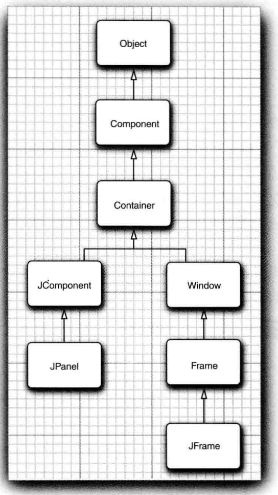
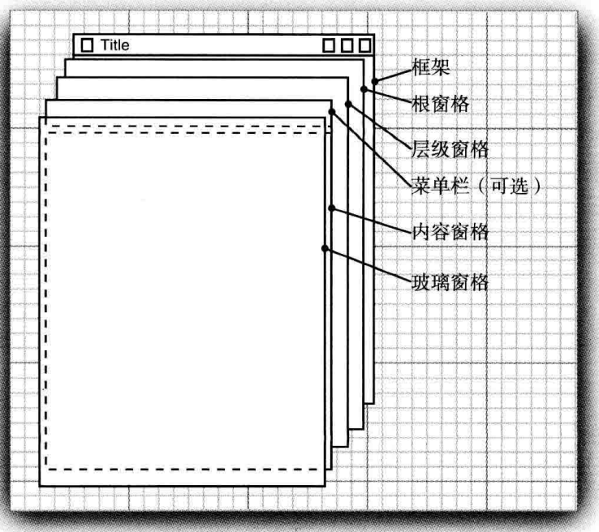
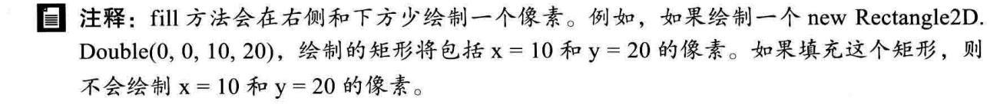
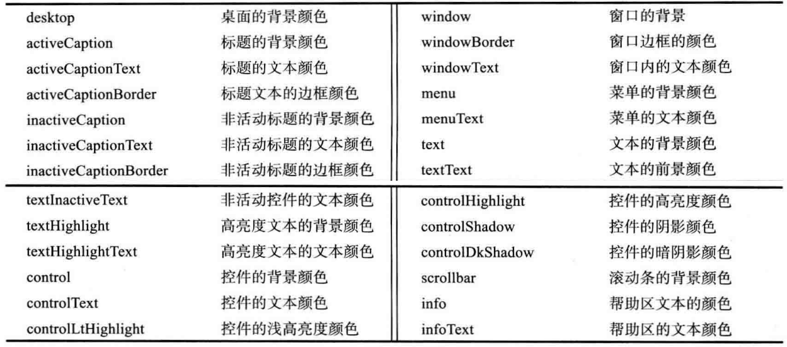
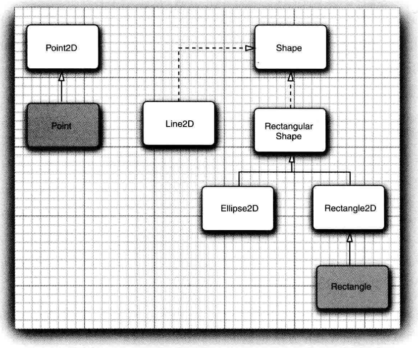
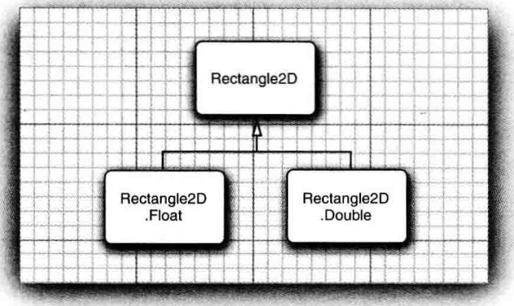
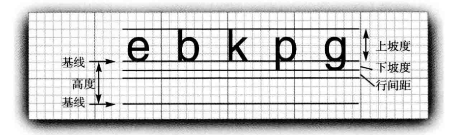

Java 标准库学习
Table of Contents
- 1. File
- 2. 字符串
- 3. 输入输出
- 4. 关于日期的类
- 5. Swing
- 5.1. 为什么Swing的库需要以J开头？
- 5.2. 为什么有些java包名叫做javax？
- 5.3. Swing的默认框架的大小是多少？
- 5.4. Swing组件如何被运行？
- 5.5. 使用Java开发的Eclipse使用的图形工具库是什么？
- 5.6. 创建出来的框架一开始就是可见的吗？
- 5.7. Swing关闭了最后一个框架后，程序会被关闭吗？
- 5.8. 如何创建一个Swing框架？
- 5.9. 框架的属性
- 5.10. 如何获取屏幕大小？
- 5.11. Swing和AWT在Java中的继承层次图
- 5.12. [Code] Swing写出来的小程序
- 5.13. JFrame
- 5.14. 处理2D图形
- 6. 附录
1 File
1.1 访问文件名相关操作
| 方法名 | 描述 | 返回值 |
|---|---|---|
| getName | 返回这个抽象路径名所表示的文件或目录的名称。这只是路径名名称序列中的最后一个名称。如果路径名的名称序列为空，则返回空字符串。 | String |
| getParent | 返回父文件名，如果是相对路径，那么结果返回null | String |
| getParentFile | 返回父文件或目录，如果使用相对路径创建，返回null | File |
| getAbsolutePath | 返回绝对值路径，包括从 getName() 返回的值 | String |
| getAbsoluteFile | 获取当前的File对象，以绝对值路径存储 | File |
| getCanonicalPath | 返回绝对的唯一的规范路径（根据操作系统进行规范处理） | String |
| getCanonicalFile | 获取以规范路径储存的文件对象 | File |
1.1.1 getName
注意！ 当使用 非绝对路径 创建File对象时，使用 getName 函数返回的值就是一个点。
如何获取其路径呢？
File file = new File("."); // 若输入 "~" getName() 得到的也是 ~, 如果输入 ”nih“ getName() 得到的是 "nih"
file.getAbsoluteFile().getParent();
或者使用 getCanonicalPath() 方法
1.1.2 getCanonicalPath
规范路径名既是绝对的又是唯一的。规范形式的准确定义是依赖于系统的，本方法首先在必
要时将这个路径名转换为绝对形式，就像调用 getAbsolutePath() 方法一样。如果有必
要，本方法首先将这个路径名转换为绝对形式，就像调用getAbsolutePath()方法一样，然
后以一种依赖于系统的方式将其映射为唯一形式。
这通常包括从路径名中删除多余的名称，如“. ”和“.”，解析符号链接（在UNIX平台上）， 以及将驱动器字母转换为标准大小写（在Microsoft Windows平台上）。
1.2 文件检测相关
| 方法名 | 描述 | 返回值 |
|---|---|---|
| canRead | 判断File对象是否可读的 | Boolean |
| canWrite | 判断File对象是否可写的 | Boolean |
| exists | 测试该抽象路径名所表示的文件或目录是否存在。 | Boolean |
| isDirectory | Boolean | |
| isFile | Boolean | |
| isHidden | Boolean | |
1.2.1 canRead
测试应用程序是否可以读取该抽象路径名所表示的文件。在某些平台上，可能会以特殊权限 启动Java虚拟机，允许它读取被标记为不可读的文件。因此，即使文件没有读取权限，本方 法也可能返回true。
1.2.2 isHidden
测试这个抽象路径名命名的文件是否为隐藏文件。隐藏文件的确切定义取决于系统。在UNIX 系统中，如果一个文件的名字以句号(’.’)开头，则认为该文件是隐藏的。在Microsoft Windows系统中，如果文件在文件系统中被标记为隐藏文件，则被认为是隐藏文件。
1.3 获取常规文件信息
| 方法名 | 描述 | 返回值 |
|---|---|---|
| lastModified | 返回文件的最后修改时间 | long |
| length | 返回文件内容的长度 | long |
1.4 文件操作
1.5 目录操作
2 字符串
2.1 字符串转换为数字
//字符串转换为数字 int tranToNum = Integer.parseInt(str, 16); //这里的16表示十六进制，也可以是十进制或是其他进制(如果不写，这里默认是10进制) double tranToDou = Double.parseDouble(str);
2.2 数字转换为字符串
//方法一:通过包装类来实现 String tranToStr = String.valueOf(num); //方法二:直接通过空字符串+数字的形式转换为字符串 String str= ""+num; //方法三:强制类型转换 String str= （String）num;
2.3 快速判断字符串是否为数字
2.3.1 使用Character一个一个字符进行判断
public static boolean isNumeric(String str){
for (int i = str.length();--i>=0;){
if (!Character.isDigit(str.charAt(i))){
return false;
}
}
return true;
}
2.3.2 使用正则表达式
public static Boolean isNumber(String str){
return str.matches("[+-]?[0-9]+.？[0-9]*");
}
2.3.3 使用ascii码
public static boolean isNumeric(String str){
int i=str.length()-1;
int chr = str.charAt(i);
int countDoint = 0;
if(( chr <48|| chr>57 ) || chr != 43 || chr != 45){
return false;
}
for(;i>=0;--i){
int chr=str.charAt(i);
if(chr == 46 && countDoint < 1){
countDoint++;
continue;
}else{
return false;
}
if(chr<48 || chr>57)
return false;
}
return true;
}
3 输入输出
3.1 printf
3.1.1 printf的格式化字符串
%c 单个字符 %d 十进制整数 %f 十进制浮点数 %o 八进制数 %s 字符串 %u 无符号十进制数 %x 十六进制数 %% 输出百分号%
格式控制的完整格式：
%[-][0][m.n][lh][format_string]
- ①
%：表示格式说明的起始符号，不可缺少。 - ②
-：有-表示左对齐输出，如省略表示右对齐输出。 - ③
0：有0表示指定空位填0,如省略表示指定空位不填。 - ④
m.n：m指域宽，即对应的输出项在输出设备上所占的字符数。N指精度。用于说明输出的实型数的小数位数。为指定n时，隐含的精度为n=6位。 - ⑤
l或h:l对整型指long型，对实型指double型。h用于将整型的格式字符修正为short型。 format_string表示 3.1.1
3.1.2 printf使用实例
3.1.2.1 使用输出宽度 [m.n]
int m,n;
String ch = "a";
m=n=3;
printf("%*.*s\n",m,n,ch);
前边的*定义的是总的宽度，后边的定义的是输出的个数。分别对应外面的参数m和n 。我想 这种方法的好处是可以在语句之外对参数m和n赋值，从而控制输出格式。
3.1.2.2 输出字符串
/*** 输出字符串 ***/
// %s表示输出字符串，也就是将后面的字符串替换模式中的%s
System.out.printf("%s", new Integer(1212));
// %n表示换行
System.out.printf("%s%n", "end line");
// 还可以支持多个参数
System.out.printf("%s = %s%n", "Name", "Zhangsan");
// %S将字符串以大写形式输出
System.out.printf("%S = %s%n", "Name", "Zhangsan");
// 支持多个参数时，可以在%s之间插入变量编号，1$表示第一个字符串，3$表示第3个字符串
System.out.printf("%1$s = %3$s %2$s%n", "Name", "san", "Zhang");
3.1.2.3 输出布尔
/*** 输出boolean类型 ***/
System.out.printf("true = %b; false = ", true);
System.out.printf("%b%n", false);
3.1.2.4 输出整数和浮点数
/*** 输出整数类型***/
Integer iObj = 342;
// %d表示将整数格式化为10进制整数
System.out.printf("%d; %d; %d%n", -500, 2343L, iObj);
// %o表示将整数格式化为8进制整数
System.out.printf("%o; %o; %o%n", -500, 2343L, iObj);
// %x表示将整数格式化为16进制整数
System.out.printf("%x; %x; %x%n", -500, 2343L, iObj);
// %X表示将整数格式化为16进制整数，并且字母变成大写形式
System.out.printf("%X; %X; %X%n", -500, 2343L, iObj);
/*** 输出浮点类型***/
Double dObj = 45.6d;
// %e表示以科学技术法输出浮点数
System.out.printf("%e; %e; %e%n", -756.403f, 7464.232641d, dObj);
// %E表示以科学技术法输出浮点数，并且为大写形式
System.out.printf("%E; %E; %E%n", -756.403f, 7464.232641d, dObj);
// %f表示以十进制格式化输出浮点数
System.out.printf("%f; %f; %f%n", -756.403f, 7464.232641d, dObj);
// 还可以限制小数点后的位数
System.out.printf("%.1f; %.3f; %f%n", -756.403f, 7464.232641d, dObj);
3.1.2.5 输出日期和时间
/*** 输出日期类型***/
// %t表示格式化日期时间类型，%T是时间日期的大写形式，在%t之后用特定的字母表示不同的输出格式
Date date = new Date();
long dataL = date.getTime();
// 格式化年月日
// %t之后用y表示输出日期的年份（2位数的年，如99）
// %t之后用m表示输出日期的月份，%t之后用d表示输出日期的日号
System.out.printf("%1$ty-%1$tm-%1$td; %2$ty-%2$tm-%2$td%n", date, dataL);
// %t之后用Y表示输出日期的年份（4位数的年），
// %t之后用B表示输出日期的月份的完整名， %t之后用b表示输出日期的月份的简称
System.out.printf("%1$tY-%1$tB-%1$td; %2$tY-%2$tb-%2$td%n", date, dataL);
// 以下是常见的日期组合
// %t之后用D表示以 "%tm/%td/%ty"格式化日期
System.out.printf("%1$tD%n", date);
//%t之后用F表示以"%tY-%tm-%td"格式化日期
System.out.printf("%1$tF%n", date);
/*** 输出时间类型***/
// 输出时分秒
// %t之后用H表示输出时间的时（24进制），%t之后用I表示输出时间的时（12进制），
// %t之后用M表示输出时间的分，%t之后用S表示输出时间的秒
System.out.printf("%1$tH:%1$tM:%1$tS; %2$tI:%2$tM:%2$tS%n", date, dataL);
// %t之后用L表示输出时间的秒中的毫秒
System.out.printf("%1$tH:%1$tM:%1$tS %1$tL%n", date);
// %t之后p表示输出时间的上午或下午信息
System.out.printf("%1$tH:%1$tM:%1$tS %1$tL %1$tp%n", date);
// 以下是常见的时间组合
// %t之后用R表示以"%tH:%tM"格式化时间
System.out.printf("%1$tR%n", date);
// %t之后用T表示以"%tH:%tM:%tS"格式化时间
System.out.printf("%1$tT%n", date);
// %t之后用r表示以"%tI:%tM:%tS %Tp"格式化时间
System.out.printf("%1$tr%n", date);
/*** 输出星期***/
// %t之后用A表示得到星期几的全称
System.out.printf("%1$tF %1$tA%n", date);
// %t之后用a表示得到星期几的简称
System.out.printf("%1$tF %1$ta%n", date);
// 输出时间日期的完整信息
System.out.printf("%1$tc%n", date);
3.2 Scanner
4 关于日期的类
4.1 Calendar
public static void main(String[] args) {
Calendar cal = Calendar.getInstance();
int day = cal.get(Calendar.DATE);
int month = cal.get(Calendar.MONTH) + 1;
int year = cal.get(Calendar.YEAR);
int dow = cal.get(Calendar.DAY_OF_WEEK);
int dom = cal.get(Calendar.DAY_OF_MONTH);
int doy = cal.get(Calendar.DAY_OF_YEAR);
System.out.println("当期时间: " + cal.getTime());
System.out.println("日期: " + day);
System.out.println("月份: " + month);
System.out.println("年份: " + year);
System.out.println("一周的第几天: " + dow); // 星期日为一周的第一天输出为 1，星期一输出为 2，以此类推
System.out.println("一月中的第几天: " + dom);
System.out.println("一年的第几天: " + doy);
}
4.2 LocalDate
4.2.1 创建LocalDate
LocalDate只能通过工厂方法进行创建，主要由两个方法 now() of()
4.2.1.1 now()
now() : 从默认时区的系统时钟中获取当前日期。
LocalDate l = LocalDate.now(); System.out.println(l.plusYears(1));
now(ZoneId) : 从指定时区的系统时钟中获取当前日期。
LocalDate l = LocalDate.now(ZoneId.of("-05:00"));
System.out.println(l.plusYears(1));
now(Clock) : 从指定时钟获取当前日期。
LocalDate l = LocalDate.now(Clock.systemUTC());
4.2.1.2 of()
of(int,Month,int) : 从年、月和日获取LocalDate实例。
System.out.println(LocalDate.of(0, Month.MAY, 1)); // output 0000-05-01
4.2.1.3 ofYearDay()
ofYearDay(int year,int dyaOfYear) : 从指定年的获取指定年中的指定天获取LocalDate实例
LocalDate l = LocalDate.ofYearDay(1998, 99); System.out.println(l); // output 1998-04-09
4.2.1.4 ofEpochDay()
ofEpochDay(long epochDay) : 从1970(新纪元)年开始获取指定天数的LocalDate实例
LocalDate l = LocalDate.ofEpochDay(0); System.out.println(l); // output 1970-01-01
4.2.1.5 plusYears()
返回这个LocalDate的副本，并加上指定的年数。
LocalDate plusYears(long yearsToAdd)
在jshell上的测试：
LocalDate l = LocalDate.now() l ==> 2020-08-23 jshell> LocalDate l2 = l.plusYears(1); l2 ==> 2021-08-23
5 Swing
5.1 为什么Swing的库需要以J开头？
因为同样的类不加J的是 AWT 的，因此为了与AWT区分开来，需要在前面加上J。
5.2 为什么有些java包名叫做javax？
java后面加上x表示java的扩展包,而不是核心包。
5.3 Swing的默认框架的大小是多少？
所有的Swing框架的默认大小都是0x0像素。
5.4 Swing组件如何被运行？
所有的Swing组件均由 事件分派线程 进行配置。也就是说Swing组件是被事件所触发。
5.5 使用Java开发的Eclipse使用的图形工具库是什么？
Eclipse使用的不是Java提供的Swing图形库，而是自己重新开发的的一个新图形库(与AWT类 似)：SWT
可以在下面的网站看到： https://wiki.eclipse.org/Eclipse_Corner
5.6 创建出来的框架一开始就是可见的吗？
创建出来的框架一开始并不是可见的，这就给了程序员添加组件的机会。可以在框架显示之 前对框架进行初始化（即加入合适的组件）。
5.7 Swing关闭了最后一个框架后，程序会被关闭吗？
5.8 如何创建一个Swing框架？
框架的创建是通过继承Swing的 JFrame 类来实现，在事件队列中创建这个定制类的对象
来创建框架。
5.9 框架的属性
setLocation()框架定位，仅仅确定框架的位置，通过两个int类型 x y来实现。setBounds()框架定位，除了确定框架的位置，还可以设置初始框架的大小。setIconImage()设置框架图标setTitle()设置标题栏setResizable()设置是否能够在运行时被鼠标改变大小
5.9.1 框架位置是相对于哪里？
框架位置的设置相对于正在运行的主机的屏幕左上角，左上角的坐标为(0,0),方向分别沿着 右边和下面延伸。
5.9.2 Swing框架有哪些属性允许被改变？
- 初始位置，初始大小
- 框架标题和图标
- 是否允许运行时被改变大小
5.9.3 如何设置应用图标？
Image img = new ImageIcon("icon.gif").getImage();
setIconImage(img);
5.9.4 get/set约定
在Swing的方法中，大多数都是成对出现的，都有对属性的读写操作。
5.9.4.1 对于类型为boolean的属性，获取方法的规定是？
在成对出现的规则中，对于布尔值的读取操作是以 is 开头而不是 get
public boolean isLocationByPlatform(); public boolean setLocationByPlatform();
5.9.5 能否关闭框架装饰？
框架装饰就是包含标题，图标，最小化，最大化，关闭等按钮的部分，这些由操作系统进行 绘制，因此对于不一样的操作系统，观感也是不同的。
想要关闭框架装饰，可以使用如下方法：
frame.setUndecorated(true);
5.9.6 如何根据不同平台确定合适的框架大小？
5.10 如何获取屏幕大小？
5.11 Swing和AWT在Java中的继承层次图

5.12 [Code] Swing写出来的小程序
package sizedFrame;
import java.awt.*;
import javax.swing.*;
/**
* @version 1.33 2007-05-12
* @author Cay Horstmann
*/
public class SizedFrameTest
{
public static void main(String[] args)
{
EventQueue.invokeLater(() ->
{
JFrame frame = new SizedFrame();
frame.setTitle("SizedFrame");
frame.setDefaultCloseOperation(JFrame.EXIT_ON_CLOSE);
frame.setVisible(true);
});
}
}
class SizedFrame extends JFrame
{
public SizedFrame()
{
// get screen dimensions
Toolkit kit = Toolkit.getDefaultToolkit(); // 获取默认工具，这些工具主要用于与操作系统打交道
Dimension screenSize = kit.getScreenSize(); // 获取屏幕大小
int screenHeight = screenSize.height;
int screenWidth = screenSize.width;
// set frame width, height and let platform pick screen location
setSize(screenWidth / 2, screenHeight / 2);
setLocationByPlatform(true);
// set frame icon
Image img = new ImageIcon("icon.gif").getImage();
setIconImage(img);
}
}
5.13 JFrame
5.13.1 JFrame的结构

5.13.2 如何在框架上绘制组件？
想要在JFrame框架中绘制组件，必须定义一个存放组件的容器，比如JComponent。需要扩展 一个容器类。
而容器类中用于输出组件的方式就是使用 paintComponent() 方法。
5.13.2.1 paintComponent方法内容主要操作什么？
paintComponent方法仅仅接受一个参数:类型为 Graphics 的变量；因此paintComponent
方法主要操作这个变量来显示需要的图形到框架上。
5.13.2.2 paintComponent方法能够自己调用吗？
5.13.2.3 何时触发paintComponent方法？
5.13.2.4 强制刷新屏幕调用的还是paintComponent方法吗？
当用户强制进行屏幕刷新时，使用的是 repaint() 方法。
5.13.2.5 告诉框架容器的默认大小 getPreferredSize()
该函数用于设置容器的首选大小（即默认大小），返回 Dimension 类。
5.13.2.6 框架大小的设置
框架默认大小有两种设置方式： setSize() 和 pack() ，前者使用数值显示指定宽度
和高度；后者使用容器的默认大小填充。
5.13.2.6.1 [问] 若容器内没有任何组件，使用 pack() 得到的默认大小是？
5.14 处理2D图形
5.14.1 如何在框架上绘制2D图形？
绘制2D图形可以使用两个类： Graphics 和 Graphics2D 类。其中Graphics类只能绘制
直线，矩形和椭圆等方法，但是对于这些已经绘制的图形的操作能力非常有限，比如：不能
改变线的粗细，不能旋转这些图形等。
因此出现了Graphics2D类，它具有强大的图形操作。
绘制图形之前，需要创建图形，然后再使用Graphics2D的 draw() 方法来绘制。
5.14.2 paintComponent()方法如何获取Graphics2D类呢？
自从Java SE 2版本以来，paintComponent()方法就自动的获得一个Graphics2D类，（因为 Graphics2D是Graphics的子类）只需要对参数进行一次类型转换即可。
public void paintComponent(Graphics g){
Graphics2D g2 = (Graphics2D) g;
// ....
}
5.14.3 Graphics 类
Graphics类是输出简单图形的一种方式，其度量单位是像素(px)。
5.14.3.1 如何绘制文本？
public void paintComponent(Graphics g){
int x = 100;
int y = 200;
g.drawString("Hello World", x, y);
}
5.14.4 Graphics2D类
5.14.4.1 Graphics2D使用什么类型作为坐标的计算？
Graphics2D使用浮点数(double)类型作为度量类型。
5.14.4.2 绘制带颜色填充的图形
这里的颜色指的是画笔的颜色。
Rectangle2D rect = new Rectangle2D(px, py, width, height); g2.setPaint(Color.RED); g2.fill(rect);
5.14.4.3 带颜色的文字
g2.setPaint(Color.RED);
g2.drawString("Hello World", 100, 100);
5.14.4.4 如何绘制多种颜色的图形？
按照如下方式：
选择颜色 → 绘制图形 → 选择颜色 → ……
5.14.4.5 使用fill()方法需要注意什么？

5.14.4.6 如何获取预定义颜色？
BLACK , BLUE, CYAN, DARK.GRAY, CRAY, GREEN, LIGHT_CRAY , MACENTA, ORANGE, PINK, RED, WHITE, YELLOW
在Java1.4之前，颜色常量使用小写，因此为了向后兼容，这里的颜色常量也是可以使用小 写（不过不推荐小写）。
5.14.4.7 如何自定义颜色？
定义颜色就是创建一个 Color 对象。
5.14.4.7.1 使用RGB创建颜色
每个颜色的数值都在范围0~128之间
int red = 0; int green = 100; int blue = 128; Color nc = new Color(red, green, blue);
5.14.4.8 设置前景色和背景色
- 设置背景色
Component.setBackground() - 设置前景色
Component.setForeground()
MyComponent p = new MyComponent(); p.setBackground(Color.PINK);
5.14.4.9 加亮和加暗颜色
Color 类中的 brighter() 方法和 darker() 方法的功能， 它们分别加亮或变暗当前
的颜色。
Color c = new Color(1,0,0); p.setBackground(c.brighter().brighter().brighter());
实际上， brighter() 只微微地加亮一点。要达到耀眼的效果， 需要调用三次这个方法：
c.brighter().brighter().brighter().
5.14.4.10 通过获取系统颜色来设置组件颜色
p.setBackground(SystemColor.window);

Figure 4: 系统颜色
5.14.5 图形类
图形类主要用于创建图形，然后再被Graphics2D的 draw() 方法绘制出来。
每个图形类都有两种内部子类： Float 和 Double 分别表示其度量单位使用的类型。

Figure 5: Java图形类 – 灰色部分表示遗留类
5.14.5.1 Rectangle2D类

5.14.5.1.1 根据左上角位置和宽高创建矩形
Rectangle2D rect = new Rectangle2D.Double(px,py,width,height);
5.14.5.1.2 根据对角线创建矩形
所谓根据对角线创建，也就是根据对角线的两个顶点创建。
Rectangle2D rect = new Rectangle2D.Double(); rect.setFrameFromDiagonal(px, py, qx, qy); // or Point2D p = new Point2D.Double(px, py); Point2D q = new Point2D.Double(qx, qy); rect.setFrameFromDiagonal(p, q);
5.14.5.2 Ellipse2D类
5.14.5.2.1 为什么Ellipse2D与Rectangle2D类同属一个超类？
5.14.5.2.2 根据椭圆中心点和宽高创建椭圆
Ellipse2D ellipse = new Ellipse2D.Double(cx, cy, width, height);
5.14.5.2.3 根据中心点和外边框顶点创建椭圆
Ellipse2D ellipse = new Ellipse2D.Double(); ellipse.setFrameFromCenter(cx, cy, corx, cory);
5.14.5.2.4 根据一个已经创建的矩形绘制椭圆
// draw a rectangle double leftX = 100; double topY = 100; double width = 200; double height = 150; Rectangle2D rect = new Rectangle2D.Double(leftX, topY, width, height); g2.draw(rect); // draw the enclosed ellipse Ellipse2D ellipse = new Ellipse2D.Double(); ellipse.setFrame(rect); g2.draw(ellipse);
5.14.5.3 Line2D类
5.14.5.3.1 使用Point2D创建直线类
Point2D start = new Point2D.Double(px, py); Point2D end = new Point2D.Double(qx, qy); Line2D l = new Line2D.Double(start, end);
5.14.5.3.2 使用两个顶点创建直线
Line2D l = new Line2D.Double(startx, starty, endx, endy);
5.14.5.4 [Code] 图形类的综合应用
import java.awt.*;
import java.awt.geom.*;
import javax.swing.*;
/**
* @version 1.33 2007-05-12
* @author Cay Horstmann
*/
public class DrawTest {
public static void main(String[] args) {
EventQueue.invokeLater(
() -> {
JFrame frame = new DrawFrame();
frame.setTitle("DrawTest");
frame.setDefaultCloseOperation(JFrame.EXIT_ON_CLOSE);
frame.setVisible(true);
});
}
}
/** A frame that contains a panel with drawings */
class DrawFrame extends JFrame {
public DrawFrame() {
add(new DrawComponent());
pack();
}
}
/** A component that displays rectangles and ellipses. */
class DrawComponent extends JComponent {
private static final int DEFAULT_WIDTH = 400;
private static final int DEFAULT_HEIGHT = 400;
public void paintComponent(Graphics g) {
Graphics2D g2 = (Graphics2D) g;
// draw a rectangle
double leftX = 100;
double topY = 100;
double width = 200;
double height = 150;
Rectangle2D rect = new Rectangle2D.Double(leftX, topY, width, height);
g2.draw(rect);
// draw the enclosed ellipse
Ellipse2D ellipse = new Ellipse2D.Double();
ellipse.setFrame(rect);
g2.draw(ellipse);
// draw a diagonal line
g2.draw(new Line2D.Double(leftX, topY, leftX + width, topY + height));
// draw a circle with the same center
double centerX = rect.getCenterX();
double centerY = rect.getCenterY();
double radius = 150;
Ellipse2D circle = new Ellipse2D.Double();
circle.setFrameFromCenter(centerX, centerY, centerX + radius, centerY + radius);
g2.draw(circle);
}
public Dimension getPreferredSize() {
return new Dimension(DEFAULT_WIDTH, DEFAULT_HEIGHT);
}
}
5.14.6 字体
5.14.6.1 字体名由什么组成？
人们可以通过字体名（ font face name) 指定一种字体。字体名由 “Helvetica” 这样的字 体家族名（font family name) 和一个可选的 “Bold” 后缀组成。例如，“Helvetica” 和 “HelveticaBold” 属于 “Helvetica” 家族的字体。
5.14.6.2 如何获取系统的字体名字？
String[] fontNames = GraphicsEnvironment
.getLocalGraphicsEnvironment()
.getAvailableFontFamilyNames();
5.14.6.3 AWT的五种逻辑字体名
AWT 定义了五个逻辑（logical) 字体名：
SansSerif Serif Monospaced Dialog Dialoglnput
5.14.6.4 创建一个字体对象
Font sansboldl4 = new Font("SansSerif", Font.BOLD, 14);
5.14.6.5 字体风格有哪些？
Font.PLAIN 常规 Font.BOLD 加粗 Font.ITALIC 斜体 Font.BOLD + Font.ITALIC 加粗斜体
5.14.6.6 从磁盘或URL读取字体
5.14.6.7 deriveFont() 的两种重载形式所完成的工作一样吗?
5.14.6.8 如何使用指定字体打印文本?
5.14.6.9 字体的排版

6 附录
6.1 ASCII码表
| Bin | Dec | Hex | 缩写/字符 | 解释 |
|---|---|---|---|---|
| 00000000 | 0 | 00 | NUL(null) | 空字符 |
| 00000001 | 1 | 01 | SOH(start of headling) | 标题开始 |
| 00000010 | 2 | 02 | STX (start of text) | 正文开始 |
| 00000011 | 3 | 03 | ETX (end of text) | 正文结束 |
| 00000100 | 4 | 04 | EOT (end of transmission) | 传输结束 |
| 00000101 | 5 | 05 | ENQ (enquiry) | 请求 |
| 00000110 | 6 | 06 | ACK (acknowledge) | 收到通知 |
| 00000111 | 7 | 07 | BEL (bell) | 响铃 |
| 00001000 | 8 | 08 | BS (backspace) | 退格 |
| 00001001 | 9 | 09 | HT (horizontal tab) | 水平制表符 |
| 00001010 | 10 | 0A | LF (NL line feed, new line) | 换行键 |
| 00001011 | 11 | 0B | VT (vertical tab) | 垂直制表符 |
| 00001100 | 12 | 0C | FF (NP form feed, new page) | 换页键 |
| 00001101 | 13 | 0D | CR (carriage return) | 回车键 |
| 00001110 | 14 | 0E | SO (shift out) | 不用切换 |
| 00001111 | 15 | 0F | SI (shift in) | 启用切换 |
| 00010000 | 16 | 10 | DLE (data link escape) | 数据链路转义 |
| 00010001 | 17 | 11 | DC1 (device control 1) | 设备控制1 |
| 00010010 | 18 | 12 | DC2 (device control 2) | 设备控制2 |
| 00010011 | 19 | 13 | DC3 (device control 3) | 设备控制3 |
| 00010100 | 20 | 14 | DC4 (device control 4) | 设备控制4 |
| 00010101 | 21 | 15 | NAK (negative acknowledge) | 拒绝接收 |
| 00010110 | 22 | 16 | SYN (synchronous idle) | 同步空闲 |
| 00010111 | 23 | 17 | ETB (end of trans. block) | 传输块结束 |
| 00011000 | 24 | 18 | CAN (cancel) | 取消 |
| 00011001 | 25 | 19 | EM (end of medium) | 介质中断 |
| 00011010 | 26 | 1A | SUB (substitute) | 替补 |
| 00011011 | 27 | 1B | ESC (escape) | 溢出 |
| 00011100 | 28 | 1C | FS (file separator) | 文件分割符 |
| 00011101 | 29 | 1D | GS (group separator) | 分组符 |
| 00011110 | 30 | 1E | RS (record separator) | 记录分离符 |
| 00011111 | 31 | 1F | US (unit separator) | 单元分隔符 |
| 00100000 | 32 | 20 | (space) | 空格 |
| 00100001 | 33 | 21 | ! | |
| 00100010 | 34 | 22 | “ | |
| 00100011 | 35 | 23 | # | |
| 00100100 | 36 | 24 | $ | |
| 00100101 | 37 | 25 | % | |
| 00100110 | 38 | 26 | & | |
| 00100111 | 39 | 27 | ’ | |
| 00101000 | 40 | 28 | ( | |
| 00101001 | 41 | 29 | ) | |
| 00101010 | 42 | 2A | * | |
| 00101011 | 43 | 2B | + | |
| 00101100 | 44 | 2C | , | |
| 00101101 | 45 | 2D | - | |
| 00101110 | 46 | 2E | . | |
| 00101111 | 47 | 2F | / | |
| 00110000 | 48 | 30 | 0 | |
| 00110001 | 49 | 31 | 1 | |
| 00110010 | 50 | 32 | 2 | |
| 00110011 | 51 | 33 | 3 | |
| 00110100 | 52 | 34 | 4 | |
| 00110101 | 53 | 35 | 5 | |
| 00110110 | 54 | 36 | 6 | |
| 00110111 | 55 | 37 | 7 | |
| 00111000 | 56 | 38 | 8 | |
| 00111001 | 57 | 39 | 9 | |
| 00111010 | 58 | 3A | : | |
| 00111011 | 59 | 3B | ; | |
| 00111100 | 60 | 3C | < | |
| 00111101 | 61 | 3D | = | |
| 00111110 | 62 | 3E | > | |
| 00111111 | 63 | 3F | ? | |
| 01000000 | 64 | 40 | @ | |
| 01000001 | 65 | 41 | A | |
| 01000010 | 66 | 42 | B | |
| 01000011 | 67 | 43 | C | |
| 01000100 | 68 | 44 | D | |
| 01000101 | 69 | 45 | E | |
| 01000110 | 70 | 46 | F | |
| 01000111 | 71 | 47 | G | |
| 01001000 | 72 | 48 | H | |
| 01001001 | 73 | 49 | I | |
| 01001010 | 74 | 4A | J | |
| 01001011 | 75 | 4B | K | |
| 01001100 | 76 | 4C | L | |
| 01001101 | 77 | 4D | M | |
| 01001110 | 78 | 4E | N | |
| 01001111 | 79 | 4F | O | |
| 01010000 | 80 | 50 | P | |
| 01010001 | 81 | 51 | Q | |
| 01010010 | 82 | 52 | R | |
| 01010011 | 83 | 53 | S | |
| 01010100 | 84 | 54 | T | |
| 01010101 | 85 | 55 | U | |
| 01010110 | 86 | 56 | V | |
| 01010111 | 87 | 57 | W | |
| 01011000 | 88 | 58 | X | |
| 01011001 | 89 | 59 | Y | |
| 01011010 | 90 | 5A | Z | |
| 01011011 | 91 | 5B | [ | |
| 01011100 | 92 | 5C | \ | |
| 01011101 | 93 | 5D | ] | |
| 01011110 | 94 | 5E | ^ | |
| 01011111 | 95 | 5F | _ | |
| 01100000 | 96 | 60 | ` | |
| 01100001 | 97 | 61 | a | |
| 01100010 | 98 | 62 | b | |
| 01100011 | 99 | 63 | c | |
| 01100100 | 100 | 64 | d | |
| 01100101 | 101 | 65 | e | |
| 01100110 | 102 | 66 | f | |
| 01100111 | 103 | 67 | g | |
| 01101000 | 104 | 68 | h | |
| 01101001 | 105 | 69 | i | |
| 01101010 | 106 | 6A | j | |
| 01101011 | 107 | 6B | k | |
| 01101100 | 108 | 6C | l | |
| 01101101 | 109 | 6D | m | |
| 01101110 | 110 | 6E | n | |
| 01101111 | 111 | 6F | o | |
| 01110000 | 112 | 70 | p | |
| 01110001 | 113 | 71 | q | |
| 01110010 | 114 | 72 | r | |
| 01110011 | 115 | 73 | s | |
| 01110100 | 116 | 74 | t | |
| 01110101 | 117 | 75 | u | |
| 01110110 | 118 | 76 | v | |
| 01110111 | 119 | 77 | w | |
| 01111000 | 120 | 78 | x | |
| 01111001 | 121 | 79 | y | |
| 01111010 | 122 | 7A | z | |
| 01111011 | 123 | 7B | { | |
| 01111100 | 124 | 7C | ||
| 01111101 | 125 | 7D | } | |
| 01111110 | 126 | 7E | ~ | |
| 01111111 | 127 | 7F | DEL (delete) | 删除 |